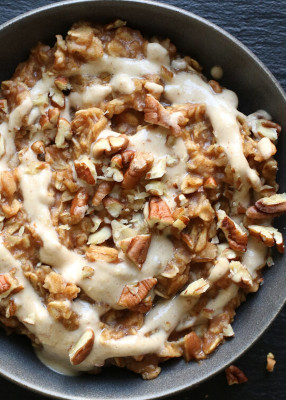

Cinnamon Roll Oatmeal

Description
Oatmeal flavored with dates, cinnamon, and vanilla extract.
A delicious and healthy breakfast.
Ingredients
- 4 cups water
- 8 pitted dates
- 2 teaspoons cinnamon
- 2 teaspoons vanilla extract or powder
- 2 cups rolled oats
- Raw pecans
- 1/2 cup raw cashews
- 1/2 teaspoons vanilla extract
- 2 pitted dates
- 3/4-1 cup water
Steps
- in a high-speed blender, combine the 4 cups water,
8 dates, cinnamon, and 2 teaspoons of vanilla.
- Blend until smooth and pour into a saucepan with the rolled oats.
- Cook until the oats reach your desired consistency.